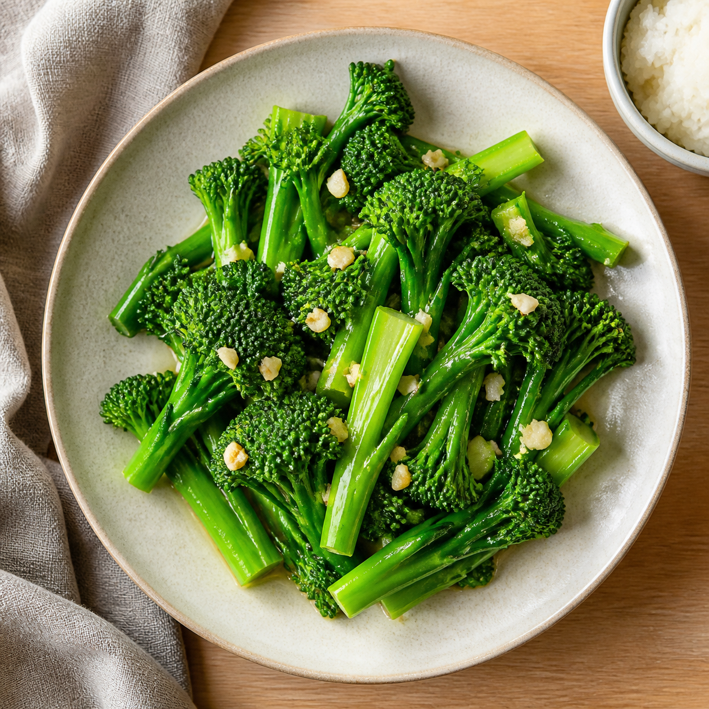

☰
⌕
Ctrl K
L
快速收录
保存一个新教程
×
粘贴教程文案、视频字幕或自己记录的步骤，稍后由 AI 整理成菜谱。
菜名或备注
教程文字或字幕
取消
收进待整理
整理教程
生成新的菜谱
×
把视频里的关键内容记下来。食材和步骤每行填写一项，之后可以直接进入做菜模式。
封面图

支持 JPG、PNG、WebP；图片会压缩后保存在当前浏览器。
恢复默认封面
菜名
预计用时（分钟）
份量（人份）
难度
简单
中等
较难
标签（用逗号分隔）
食材（每行格式：食材 | 用量）
制作步骤（每行一个步骤）
我的调整
重新整理
取消
生成菜谱